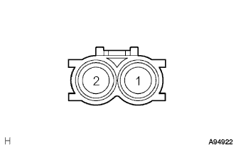

Crankshaft Position Sensor (2GR-FE) Inspection |
| 1. Crank Position Sensor |
Resistance Inspection
 |
Using SST (Toyota electrical tester), measure the resistance between the terminals.
| Measurement Terminal | Measurement Condition | Measured value |
|---|---|---|
| 1 - 2 | Cold | 1630 to 2740Ω |
| Hot | 2065 to 3225Ω |